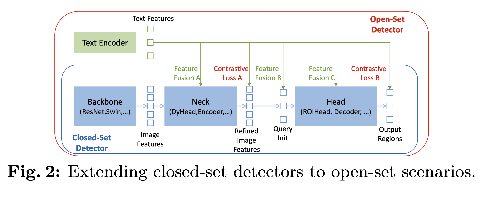

[Paper Note] Grounding DINO: Marrying DINO with Grounded Pre-Training for Open-Set Object Detection
Grounding DINO: Marrying DINO with Grounded Pre-Training for Open-Set Object Detection
Open-set object detection refers to the task of detecting objects of unknown categories, not just those from a predefined set. For example, it could involve identifying a lion’s ear. This field is advanced by introducing language to generalize to unseen objects.
Most existing open-set detectors extend closed-set detectors to open-set scenarios by incorporating language information.
- Contrastive learning can be used to give each region in an image language-aware representations.
- We have identified three points where language-vision fusion can occur:

- Backbone: Used for feature extraction.
- Neck: For feature enhancement, and also for multi-modal feature fusion.
- Head: For prediction, such as bounding boxes.
Previous Works
It was challenging for previous CNN-based methods to perform feature fusion across all three phases. In contrast, Transformer-based detectors can easily integrate multi-modal information.
CLIP, for instance, does not perform well on region-text pair tasks.
GLIP introduced a new approach by incorporating contrastive training between object regions and language phrases on large-scale data.
Limitations of GLIP:
- GLIP directly concatenates categories into sentences without considering their order, which can lead to interference between unrelated categories.
Improvements made by Grounding DINO:
- Grounding DINO treats phrases of different categories as separate sentences, extracting text features for each independently.
This work also introduces Referring Expression Comprehension (REC), a scenario often overlooked by previous methods.
- REC: Using natural language to point to a specific object, e.g., “the fruit to the right of the apple.”
Method
The method takes an image-text pair as input. It can handle multiple pairs of object boxes and noun phrases. For Referring Expression Comprehension (REC), there is only one bounding box for each text input.
- The image is fed into a Swin Transformer to extract image features, while the text is processed by BERT to obtain text features.
- A feature enhancer module (Neck) is then used for cross-modality feature fusion.
- Language-Guided Query Selection:
- We start with NI image tokens and NT text tokens. Typically, there are over 10,000 image tokens and fewer than 256 text tokens.
- The dot product between each image token and each text token is computed, resulting in an NI×NT matrix of logits.
- We apply
max(dim=-1) to get the maximum text token logit corresponding to each image token.
- Then, the top Nq image tokens corresponding to these logits are selected, where Nq is set to 900. Each token here acts as a query, which may or may not find a bounding box and its corresponding text feature. In essence, a query might produce a bounding box (x, y, w, h) and a text feature.
- Decoder: The DINO decoder is extended with a text cross-attention mechanism.
- For more details, especially on how positive and negative bounding boxes are used to train the model to understand that a query might not produce a valid bounding box, refer to the paper DINO.
Loss Function
- Bounding Box Regression: We use both L1 loss and GIOU loss.
- GIOU loss assesses the overlap between two bounding boxes.
- L1 loss measures the difference between the predicted (x, y, w, h) and the ground truth (x, y, w, h).
- Contrastive Loss:
- For the final output of each query, the similarity between its text feature and the feature of its corresponding bounding box is calculated. If a generated bounding box does not match any ground truth, then no text feature should be similar to its feature.
Bipartite Matching: How do we map the outputs of 900 queries to a small number of ground truth bounding boxes?
- Following the method in DINO, we first calculate a matching cost and then use the Hungarian algorithm to find the optimal bipartite matching.
- Matched pairs are considered positive samples, while unmatched pairs are negative samples. The training objective for negative samples is to minimize the similarity between their features and text features.
Experiments
The model was evaluated across various tasks:
- Closed-set object detection: Performance was assessed using the COCO detection benchmark.
- Open-set object detection: This was evaluated on zero-shot COCO, LVIS, and ODinW datasets.
- Referring setting: Performance for referring expression comprehension was tested using the RefCOCO dataset.
Model Details
- Backbone: Swin Transformer was used as the image backbone.
- Text Encoder: BERT-base from Hugging Face was employed as the text encoder.
- Computational Efficiency: To reduce computational load, deformable attention was utilized in the image cross-attention modules.
- Pretraining Data: The model was pretrained on Objects365 and OpenImages datasets.